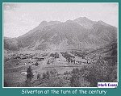
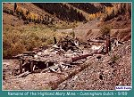
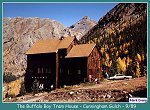
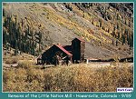

| In 1860, Captain Charles Baker lead a small party of prospectors into the Silverton area via the Stony Pass Trail. The Stony Pass Trail was the only way into the area for many years. George W. Howard, a member of Baker's original party, established Howardsville at the end of the Stony Pass Trail. Mr. Howard was an enterprising gentleman, and saw that the location was a strategic one that would make a fine site for the new town he named after himself. |
| When George decided he needed to build a log cabin, he put the free enterprise system to work. George hauled in a large stack of logs and set a barrel of whiskey next to it. As the thirsty miners came into the area over the Stony Pass Trail, George would offer them some refreshment. When the miners began to feel the effects of the free refreshments, George would ask them for a little help on his cabin. Before long he was the owner of the first permanent settlement in Howardsville. |
| By 1874, the area was home to many prospectors who followed the lead of Captain Baker. Baker's party made their original discoveries in the Eureka area. Later, the Little Giant Mine, was discovered just below Howardsville in Arastra Gulch. The Little Giant was the first substantial discovery in the area. Baker's Park, which would later become Silverton, was swelling with new immigrants as well. Baker's Park was a natural area for a large settlement like Silverton. Howardsville was located between Silverton and Eureka. This should have made it a good location for most of the miners in the area to settle. The majority of the miners still preferred to live in Silverton or Eureka. |

|
Looking up Arastra Gulch
September 1989 (68k) |
| Howardsville was the first county seat in Colorado. La Plata county was very large and covered the area of present day La Plata, San Juan, Montezuma, Dolores, and San Miguel counties. In 1876, San Juan County was carved out of La Plata County but Howardsville was no longer the county seat. Howardsville had lost the county seat to Silverton at an earlier date. Some authors would have you believe that the records were stolen in the night. In reality, Silverton had just eclipsed Howardsville in importance. The matter was decided by election and in 1876, when San Juan County was formed, Silverton became the official county seat. |

|
One of the earliest views of Silverton
Photographed in 1875 (image m0070) (141k) |
|
 |
Silverton at the turn of the century
(50k) |
| Howardsville is located at the mouth of Cunningham Gulch at the juncture of Cunningham Creek and the Animas River. As time went by, several large mines were discovered in Cunningham Gulch. The Old Hundred, Buffalo Boy, Highland Mary, Green Mountain, and Pride of the West were all in Cunningham Gulch. Howardsville became a supply point for these mines. |
| The Highland Mary Mine was at the head of Cunningham Gulch, just above the Stony Pass Trail head. The mine was discovered in 1875 by two brothers who payed a spiritualist $50,000.00 to find an ore body. The mine was developed according to instructions the spiritualist provided. The brothers spent more than $1,000,000.00 to develop the maze of tunnels as instructed. The spiritualist plan had no relationship to actual ore bodies in the area but the brothers still found some promising pay dirt. It seems that many tunnels accidentally crossed actual ore veins. The brothers eventually went bankrupt in 1885. The mine was then purchased and further development continued along more conventional lines. The Highland Mary became one of the biggest producers in Cunningham Gulch. |
|
 |
Remains of the Highland Mary Mine
Cunningham Gulch (130k) |
| The mines in Cunningham Gulch faced the same transportation problems that others in the area did. They needed an economical mode of transportation for shipment of their ore. Otto Mears formed the Silverton Northern Railroad in September of 1895 to serve this purpose. Mears extended his 2.2 mile branch line further up the Animas River on a toll road he had built years before. Ten years later, in 1905, the Green Mountain Branch of the Silverton Northern was built up Cunningham Gulch. The mines were producing very well, especially the Old Hundred Mine, which was made up of 30 different claims along the slope of Galena Mountain. |
|
 |
The Buffalo Boy Tram House
Cunningham Gulch (58k) |
| Howardsville had many booms and busts over the years. Howardsville was dependent upon the fortunes of the miners for it existence. There were still folks occupying cabins in the area until just a few years ago. A ride up Cunningham Gulch will afford you a chance to view several remnants of the mines that were once located there. The most interesting structure I found was the tram house of the old Buffalo Boy Mine. I found a family living in the old tram house which they had remodeled into their living quarters. The old cables still snaked their way up the mountain side to the mine high above. |
|
 |
Remains of the Little Nation Mill
Howardsville, Colorado (55k) |